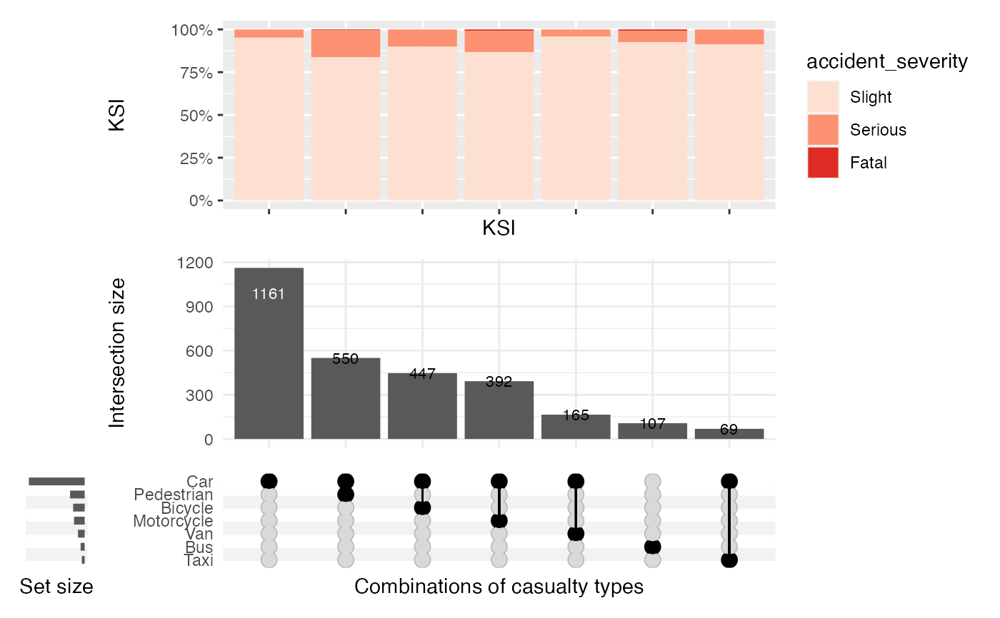

Create 'who-hit-who' visualisations
tc_upset( crash_summary, casualty_type = c("Car", "Pedestrian", "Van", "Bicycle", "Motorcycle", "Bus", "HGV", "Taxi"), family = "" )
Arguments
| crash_summary | crashes dataset with vehicles and casuatlties variables |
|---|---|
| casualty_type | The casualty types to plot |
| family | font family |
Examples
#> Warning: Unknown or uninitialised column: `casualty_type_simple`.#> Warning: Unknown or uninitialised column: `vehicle_type_simple`.#>#> [1] "accident_index" "Bus" "HGV_occupant" #> [4] "Car" "Car_occupant" "Bicycle" #> [7] "Pedestrian" "Taxi" "Motorcycle" #> [10] "HGV" "Van" "Taxi_occupant" #> [13] "Other" "Minibus_occupant" "accident_severity"#> accident_index Bus HGV_occupant Car #> Length:3449 Mode :logical Mode :logical Mode :logical #> Class :character FALSE:3240 FALSE:3242 FALSE:572 #> Mode :character TRUE :209 TRUE :207 TRUE :2877 #> Car_occupant Bicycle Pedestrian Taxi #> Mode :logical Mode :logical Mode :logical Mode :logical #> FALSE:2022 FALSE:2854 FALSE:2695 FALSE:3302 #> TRUE :1427 TRUE :595 TRUE :754 TRUE :147 #> Motorcycle HGV Van Taxi_occupant #> Mode :logical Mode :logical Mode :logical Mode :logical #> FALSE:2901 FALSE:3391 FALSE:3103 FALSE:3391 #> TRUE :548 TRUE :58 TRUE :346 TRUE :58 #> Other Minibus_occupant accident_severity #> Mode :logical Mode :logical Length:3449 #> FALSE:3392 FALSE:3447 Class :character #> TRUE :57 TRUE :2 Mode :charactertc_upset(crash_summary)#> Warning: Ignoring unknown parameters: inherit.blank#> Warning: Removed 558 rows containing non-finite values (stat_count).#> Warning: Ignoring unknown parameters: inherit.blank#> Warning: Removed 20 rows containing non-finite values (stat_count).#> #> Bus or coach occupant (17 or more pass seats) #> 159 #> Car occupant #> 2038 #> Cyclist #> 580 #> Goods vehicle (7.5 tonnes mgw and over) occupant #> 1 #> Goods vehicle (over 3.5t. and under 7.5t.) occupant #> 2 #> Minibus (8 - 16 passenger seats) occupant #> 4 #> Motorcycle 125cc and under rider or passenger #> 300 #> Motorcycle 50cc and under rider or passenger #> 69 #> Motorcycle over 125cc and up to 500cc rider or passenger #> 59 #> Motorcycle over 500cc rider or passenger #> 89 #> Other vehicle occupant #> 15 #> Pedestrian #> 772 #> Taxi/Private hire car occupant #> 70 #> Van / Goods vehicle (3.5 tonnes mgw or under) occupant #> 87casualties_wf2 = dplyr::mutate( casualties_wf, casualty_type_simple = dplyr::case_when( casualty_type == "Car occupant" ~ "Car", casualty_type == "Pedestrian" ~ "Pedestrian", casualty_type == "Cyclist" ~ "Cyclist", TRUE ~ "Other" ) ) table(casualties_wf2$casualty_type_simple)#> #> Car Cyclist Other Pedestrian #> 2038 580 855 772#> #> Agricultural vehicle Bus or coach (17 or more pass seats) #> 3 210 #> Car Goods 7.5 tonnes mgw and over #> 4285 27 #> Goods over 3.5t. and under 7.5t Minibus (8 - 16 passenger seats) #> 31 10 #> Motorcycle 125cc and under Motorcycle 50cc and under #> 326 72 #> Motorcycle over 125cc and up to 500cc Motorcycle over 500cc #> 67 91 #> Other vehicle Pedal cycle #> 44 597 #> Taxi/Private hire car Van / Goods 3.5 tonnes mgw or under #> 151 363vehicles_wf2 = dplyr::mutate( vehicles_wf, vehicle_type_simple = dplyr::case_when( vehicle_type == "Car" ~ "Car", vehicle_type == "Bicycle" ~ "Pedal cycle", TRUE ~ "Other" ) ) crash_summary = tc_join_stats19_for_upset(crashes_wf, casualties_wf2, vehicles_wf2)#>#> Warning: Ignoring unknown parameters: inherit.blank#> Warning: Removed 20 rows containing non-finite values (stat_count).